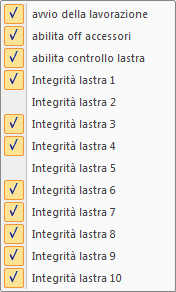

Eseguire un batch
Completata la lista, per avviare le lavorazioni fare clic sul pulsante .
Nella lista, viene espansa ogni eventuale lavorazione batch e viene azzerata la colonna “time”.
Al termine di ogni lavorazione, il valore “time” mostra il tempo impiegato.
Opzioni di esecuzione del batch

Fare clic sul pulsante per abilitare le seguenti opzioni:
- avvio della lavorazione: la spunta indica che all’avvio del batch viene avviata anche la prima lavorazione; diversamente, il CN attende lo start dall’operatore.
- Abilita off accessori: la spunta indica che è richiesto lo spegnimento di tutti gli accessori al completamento del batch.
- Abilita il controllo lastra: la spunta indica che è richiesto il controllo lastra.
- Integrità lastra 1-10: la spunta indica che le rispettive lastre sono considerate integre.